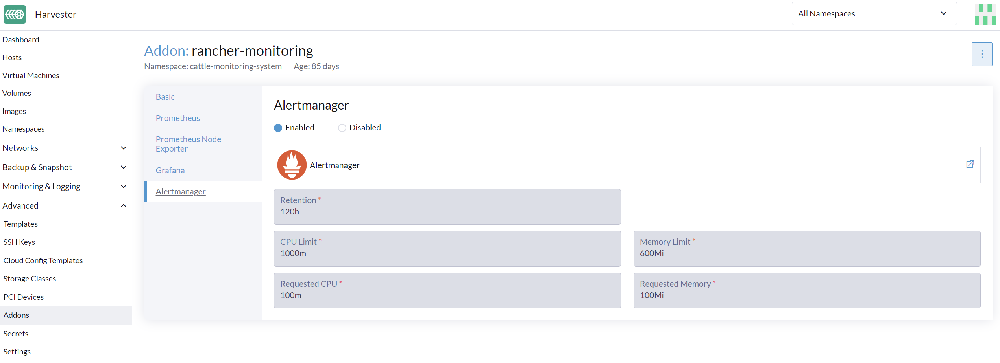
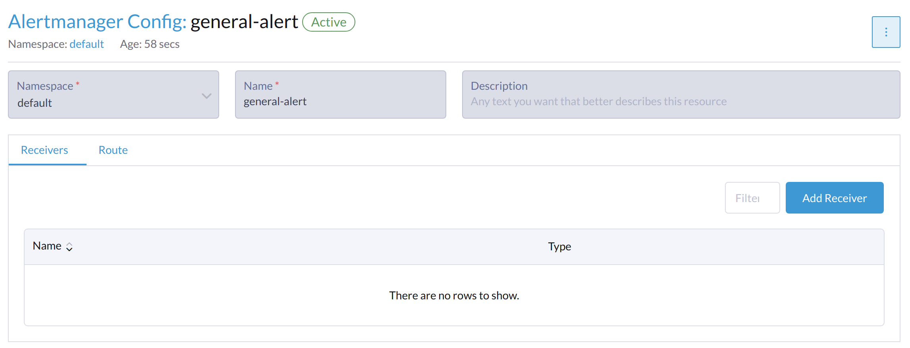

|
Dieses Dokument wurde mithilfe automatisierter maschineller Übersetzungstechnologie übersetzt. Wir bemühen uns um korrekte Übersetzungen, übernehmen jedoch keine Gewähr für die Vollständigkeit, Richtigkeit oder Zuverlässigkeit der übersetzten Inhalte. Im Falle von Abweichungen ist die englische Originalversion maßgebend und stellt den verbindlichen Text dar. |
Überwachung
Die Überwachungsfunktion ist jetzt mit einem Add-on implementiert und standardmäßig in neuen Installationen deaktiviert.
Sie können das rancher-monitoring Add-on nach der Installation über die SUSE Virtualization Benutzeroberfläche oder die Konfigurationsdatei aktivieren und deaktivieren.
Dashboard-Metriken
SUSE Virtualization hat eine integrierte Überwachungsintegration mit Prometheus bereitgestellt. Die Überwachung wird während der Installation automatisch aktiviert.
Auf der Dashboard Seite können Benutzer die Cluster-Metriken und die 10 am häufigsten verwendeten VM-Metriken anzeigen.
Außerdem können Benutzer auf den Grafana Dashboard-Link klicken, um weitere Dashboards in der Grafana-Benutzeroberfläche anzuzeigen.

|
Nur Administratorbenutzer können die Cluster-Dashboard-Metriken anzeigen. Zusätzlich wird Grafana von Reference: values.yaml |
VM-Detailmetriken
Für VMs können Sie die VM-Metriken anzeigen, indem Sie auf das VM details page > VM Metrics klicken.

|
Die aktuelle |
Zum Beispiel gibt der free -h Befehl in einem Linux-Betriebssystem die aktuellen Speichermetriken wie folgt aus
$ free -h
total used free shared buff/cache available
Mem: 7.7Gi 166Mi 4.6Gi 1.0Mi 2.9Gi 7.2Gi
Swap: 0B 0B 0B
Die entsprechende Memory Usage ist (1 - 4.6/7.7) * 100%, ungefähr 40%.
Status und Metriken der Live-Migration
Die Live-Migration ist eine kritische Funktion zur Sicherstellung der Betriebszeit von Arbeitslasten. Sie können den Fortschritt der Live-Migration von virtuellen Maschinen direkt über die Harvester-Benutzeroberfläche über das rancher-monitoring Add-on überwachen.
-
Aktivieren Sie das rancher-monitoring Add-on.
-
Gehen Sie zu Virtuelle Maschinen.
-
Suchen Sie die virtuelle Maschine in der Liste und klicken Sie dann auf den Namen, um die Details anzuzeigen.
-
Gehen Sie zum Migration Tab.
Der Migration Tab ist in die folgenden Abschnitte unterteilt:
-
Allgemeine Informationen: In diesem Abschnitt werden die aktuelle Migrationsphase, die Quell- und Zielknoten sowie die Start- und Endzeiten der Migration angezeigt.
-
Echtzeitmetriken: Diese Metriken werden von Prometheus generiert und für fünf Tage gespeichert.
Metrik Beschreibung Verbleibende Bytes der Migrationsdaten
Menge der Daten des Gastbetriebssystems, die noch nicht migriert wurden.
Verarbeitete Bytes der Migrationsdaten
Menge der Daten des Gastbetriebssystems, die bereits migriert wurden.
Übertragungsrate des Migrationsspeichers
Rate, mit der der Speicher übertragen wird.
Rate des schmutzigen Migrationsspeichers
Rate, mit der Daten im Speicher des Gastes geändert werden, aber nicht mit den Daten auf der Festplatte synchronisiert sind.
Wenn der Wert der Verbleibenden Bytes der Migrationsdaten stetig abnimmt, während der Wert der Verarbeiteten Bytes der Migrationsdaten zunimmt, werden die Daten erfolgreich an das Ziel migriert.
Wenn der Wert der Verbleibenden Bytes der Migrationsdaten schwankt, während die Rate des schmutzigen Migrationsspeichers sehr hoch bleibt, ist die virtuelle Maschine erheblich belastet. In einigen Fällen kann dies die vollständige Migration verhindern.
-
Migrationsereignisse: Diese spezifischen Ereignisprotokolle der virtuellen Maschine werden vom Kubernetes API-Server (kube-apiserver) generiert und für eine Stunde gespeichert.
So konfigurieren Sie die Überwachungseinstellungen
Die Überwachung hat mehrere Komponenten, die helfen, Metrikdaten von allen Knoten/Pods/VMs zu sammeln und zu aggregieren. Die für die Überwachung erforderlichen Ressourcen hängen von Ihren Arbeitslasten und Hardware-Ressourcen ab. SUSE Virtualization legt Standardwerte basierend auf allgemeinen Anwendungsfällen fest, und Sie können diese entsprechend ändern.
Derzeit kann Resources Settings für die folgenden Komponenten konfiguriert werden:
-
Prometheus
-
Prometheus Node Exporter
Über die Benutzeroberfläche
Auf der Erweitert-Seite können Sie die Ressourceneinstellungen wie folgt anzeigen und ändern:
-
Gehen Sie zur Erweitert > Add-on-Seite und wählen Sie die rancher-monitoring-Seite aus.
-
Ändern Sie im Prometheus-Tab die Ressourcennachfragen und -limits.
-
Wählen Sie Speichern, wenn Sie mit der Konfiguration der Einstellungen für das rancher-monitoring-Add-on fertig sind. Die Überwachungs-Implementierungen starten innerhalb weniger Sekunden neu. Bitte beachten Sie, dass der Neustart Zeit in Anspruch nehmen kann, um vorherige Daten neu zu laden.

|
Die UI-Konfiguration ist nur sichtbar, wenn das rancher-monitoring-Add-on aktiviert ist. |
Die am häufigsten verwendete Option ist die Speichereinstellung:
-
Der
Requested Memoryist der minimale Speicher, der von derMonitoring-Ressource benötigt wird. Der empfohlene Wert liegt bei etwa 5 % bis 10 % des Systemspeichers eines einzelnen Verwaltungs-Knotens. Ein Wert von weniger als 500Mi wird abgelehnt. -
Der
Memory Limitist der maximale Speicher, der einerMonitoring-Ressource zugewiesen werden kann. Der empfohlene Wert liegt bei etwa 30 % des Systemspeichers eines einzelnen Verwaltungs-Knotens. Wenn derMonitoringdiesen Schwellenwert erreicht, wird er automatisch neu gestartet.
Je nach den verfügbaren Hardware-Ressourcen und Systemlasten können Sie die obigen Einstellungen entsprechend ändern.
|
Wenn Sie mehrere Verwaltungs-Knoten mit unterschiedlichen Hardware-Ressourcen haben, setzen Sie den Wert von Prometheus basierend auf dem kleineren. |
|
Wenn eine zunehmende Anzahl von VMs auf einem Knoten bereitgestellt wird, könnte das |
Über die CLI
Sie können den folgenden kubectl Befehl verwenden, um die Ressourcenkonfiguration für das rancher-monitoring Add-on zu ändern: kubectl edit addons.harvesterhci.io -n cattle-monitoring-system rancher-monitoring.
Der Ressourcenpfad und die Standardwerte sind wie folgt:
apiVersion: harvesterhci.io/v1beta1
kind: Addon
metadata:
name: rancher-monitoring
namespace: cattle-monitoring-system
spec:
valuesContent: |
prometheus:
prometheusSpec:
resources:
limits:
cpu: 1000m
memory: 2500Mi
requests:
cpu: 850m
memory: 1750Mi
|
Sie können auch Anpassungen der Konfiguration vornehmen, wenn das Add-on deaktiviert ist. Diese Änderungen treten jedoch erst in Kraft, wenn Sie das Add-on wieder aktivieren. |
Alertmanager
SUSE Virtualization verwendet Alertmanager, um alle Alarme zu sammeln und zu verwalten, die im Cluster aufgetreten sind oder auftreten.
Alertmanager-Konfiguration
Alertmanager aktivieren/deaktivieren
Alertmanager ist standardmäßig aktiviert. Sie können es über den folgenden Konfigurationspfad deaktivieren.

Ressourceneinstellungen ändern
Sie können auch die Ressourceneinstellungen von Alertmanager ändern, wie im obigen Bild gezeigt.
AlertmanagerConfig über die WebUI konfigurieren
Um die Alarme an Drittanbieter-Server zu senden, konfigurieren Sie AlertmanagerConfig.
-
Gehen Sie in der UI zu Überwachung & Protokollierung → Überwachung → Alertmanager-Konfigurationen.
-
In der Alertmanager-Konfiguration: Erstellen Sie den *-Bildschirm, geben Sie einen Namespace und einen Namen an und klicken Sie dann auf *Erstellen.

-
Klicken Sie auf den Namen der Konfiguration, die Sie gerade erstellt haben.

-
Klicken Sie auf Empfänger hinzufügen.

-
Geben Sie einen Namen für den Empfänger an und wählen Sie dann einen Empfängertyp aus.

-
Konfigurieren Sie die erforderlichen Einstellungen und klicken Sie dann auf Erstellen.

Um Microsoft Teams oder SMS-Webhooks einzurichten, installieren Sie zunächst die App rancher-alerting-drivers mit den folgenden Befehlen:
helm repo add rancher-charts https://charts.rancher.io/
helm repo update
helm install rancher-charts/rancher-alerting-drivers \
--set sachet.enabled=false \ # Set to true if you want to use SMS Webhook
--set prom2teams.enabled=true \ # Set to true if you want to use MS Teams Webhook
--namespace cattle-monitoring-system \
--generate-nameFür detaillierte Konfigurationsanweisungen siehe Empfänger-Konfiguration in der Rancher Dokumentation.
Wenn Ihre Umgebung keinen direkten Internetzugang hat (air-gapped), müssen Sie das Helm-Chart und die zugehörigen Container-Images manuell herunterladen und dann in den SUSE Virtualization Cluster hochladen.
-
Laden Sie das Helm-Chart für rancher-alerting-drivers herunter und packen Sie es.
helm pull rancher-charts/rancher-alerting-drivers --version <VERSION>
-
Laden Sie die erforderlichen Images herunter.
docker save -o sachet.tar rancher/mirrored-messagebird-sachet:<VERSION> docker save -o prom2teams.tar rancher/mirrored-idealista-prom2teams:<VERSION>
-
Laden Sie das Chart und die Images in den SUSE Virtualization Cluster hoch.
-
Laden Sie die Images auf allen SUSE Virtualization Knoten.
docker load -i sachet.tar docker load -i prom2teams.tar
-
Installieren Sie rancher-alerting-drivers im SUSE Virtualization Cluster.
|
SUSE Virtualization verwaltet keine Upgrades der |
Konfigurieren Sie AlertmanagerConfig über die CLI.
Sie können auch AlertmanagerConfig über die CLI hinzufügen.
Beispiel: ein Webhook-Empfänger im default Namespace.
cat << EOF > a-single-receiver.yaml
apiVersion: monitoring.coreos.com/v1alpha1
kind: AlertmanagerConfig
metadata:
name: amc-example
# namespace: your value
labels:
alertmanagerConfig: example
spec:
route:
continue: true
groupBy:
- cluster
- alertname
receiver: "amc-webhook-receiver"
receivers:
- name: "amc-webhook-receiver"
webhookConfigs:
- sendResolved: true
url: "http://192.168.122.159:8090/"
EOF
# kubectl apply -f a-single-receiver.yaml
alertmanagerconfig.monitoring.coreos.com/amc-example created
# kubectl get alertmanagerconfig -A
NAMESPACE NAME AGE
default amc-example 27s
Beispiel eines über Webhook empfangenen Alarms.
Alarme, die an den Webhook-Server gesendet werden, haben das folgende Format:
{
'receiver': 'longhorn-system-amc-example-amc-webhook-receiver',
'status': 'firing',
'alerts': [],
'groupLabels': {},
'commonLabels': {'alertname': 'LonghornVolumeStatusWarning', 'container': 'longhorn-manager', 'endpoint': 'manager', 'instance': '10.52.0.83:9500', 'issue': 'Longhorn volume is Degraded.',
'job': 'longhorn-backend', 'namespace': 'longhorn-system', 'node': 'harv2', 'pod': 'longhorn-manager-r5bgm', 'prometheus': 'cattle-monitoring-system/rancher-monitoring-prometheus',
'service': 'longhorn-backend', 'severity': 'warning'},
'commonAnnotations': {'description': 'Longhorn volume is Degraded for more than 5 minutes.', 'runbook_url': 'https://longhorn.io/docs/1.3.0/monitoring/metrics/',
'summary': 'Longhorn volume is Degraded'},
'externalURL': 'https://192.168.122.200/api/v1/namespaces/cattle-monitoring-system/services/http:rancher-monitoring-alertmanager:9093/proxy',
'version': '4',
'groupKey': '{}/{namespace="longhorn-system"}:{}',
'truncatedAlerts': 0
}
|
Verschiedene Empfänger können die Alarme in unterschiedlichen Formaten darstellen. Für Details siehe bitte die zugehörigen Dokumente. |
Bekannte Einschränkung
Die AlertmanagerConfig wird durch die namespace durchgesetzt. Globale AlertmanagerConfig ohne einen Namensraum wird nicht unterstützt.
Wir haben bereits ein GitHub-Issue erstellt, um Upstream-Änderungen zu verfolgen. Sobald die Funktion verfügbar ist, wird SUSE Virtualization sie übernehmen.
Warnungen anzeigen und verwalten
Vom Alertmanager-Dashboard
Sie können das ursprüngliche Dashboard von Alertmanager über den folgenden Link besuchen. Bitte beachten Sie, dass Sie the-cluster-vip durch die tatsächliche Cluster-VIP ersetzen müssen:
Die Gesamtansicht des Alertmanager-Dashboards ist wie folgt.

Sie können die Details einer Warnung anzeigen:

Vom Prometheus-Dashboard
Sie können das ursprüngliche Dashboard von Prometheus über den folgenden Link besuchen. Bitte beachten Sie, dass Sie the-cluster-vip durch die tatsächliche Cluster-VIP ersetzen müssen:
Das Alerts-Menü in der oberen Navigationsleiste zeigt alle definierten Regeln in Prometheus an. Sie können die Filter Inactive, Pending und Firing verwenden, um schnell die Informationen zu finden, die Sie benötigen.

Fehlerbehebung
Für Unterstützung bei der Überwachung und Fehlersuche siehe bitte die Fehlerbehebungsseite.